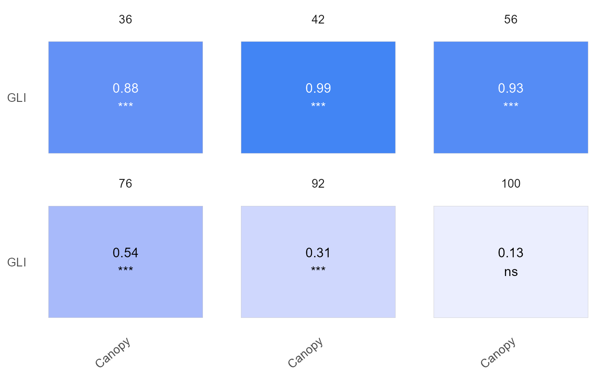

Explores data from a data frame in wide format.
Arguments
- data
A data.frame in a wide format containing the data.
- x
The name of the column in `data` that contains x points.
- y
The names of the columns in `data` that contain the variables to be analyzed.
- id
The names of the columns in `data` that contains a grouping variable.
- metadata
The names of the columns in `data` to keep across the analysis.
Value
An object of class explorer, which is a list containing the following elements:
summ_varsA data.frame containing summary statistics for each trait at each x point, including minimum, mean, median, maximum, standard deviation, coefficient of variation, number of non-missing values, percentage of missing values, and percentage of negative values.
summ_metadataA data.frame summarizing the metadata.
locals_min_maxA data.frame containing the local minima and maxima of the mean y values over x.
dt_longA data.frame in long format, with columns for uid, metadata, var, x, and y
metadataA character vector with the names of the variables to keep across.
Details
This function helps to explore the dataset before being analyzed with modeler().
Examples
library(flexFitR)
data(dt_potato_20)
results <- dt_potato_20 |>
explorer(
x = DAP,
y = c(Canopy, GLI),
id = Plot,
metadata = c(gid, Row, Range)
)
names(results)
#> [1] "summ_vars" "summ_metadata" "locals_min_max" "dt_long"
#> [5] "metadata" "x_var"
head(results$summ_vars)
#> # A tibble: 6 × 12
#> var x Min Mean Median Max SD CV n miss `miss%`
#> <chr> <dbl> <dbl> <dbl> <dbl> <dbl> <dbl> <dbl> <int> <int> <dbl>
#> 1 Canopy 0 0 0 0 0 0 NaN 196 0 0
#> 2 Canopy 29 0 0 0 0 0 NaN 196 0 0
#> 3 Canopy 36 0 2.95 1.84 15.1 3.22 1.09 196 0 0
#> 4 Canopy 42 0.763 23.4 22.9 46.2 9.31 0.398 196 0 0
#> 5 Canopy 56 32.5 75.2 75.0 98.6 12.3 0.163 196 0 0
#> 6 Canopy 76 89.1 99.7 100 100 1.04 0.0104 196 0 0
#> # ℹ 1 more variable: `neg%` <dbl>
plot(results, label_size = 4, signif = TRUE, n_row = 2)

# New data format
head(results$dt_long)
#> # A tibble: 6 × 7
#> uid gid Row Range var x y
#> <dbl> <chr> <dbl> <dbl> <chr> <dbl> <dbl>
#> 1 1 W17037-24 1 1 Canopy 0 0
#> 2 1 W17037-24 1 1 GLI 0 0
#> 3 1 W17037-24 1 1 Canopy 29 0
#> 4 1 W17037-24 1 1 GLI 29 0.00272
#> 5 1 W17037-24 1 1 Canopy 36 0.67
#> 6 1 W17037-24 1 1 GLI 36 -0.000897